Aérosols
Les Aérosols sont des particules solides ou liquides en suspension dans l'air (0,001 à 100 µm). Leur taille détermine la fraction qui pénètre dans les voies respiratoires (inhalable, thoracique, respirable) et le mécanisme de déposition. L'échantillonnage utilise des pompes et filtres calibrés selon la fraction visée. En mine, la silice cristalline respirable est l'aérosol prioritaire.
Table des matières
- Définitions et classification
- Propriétés physiques
- Mécanismes de déposition
- Effets sur la santé
- Évaluation et échantillonnage
- Moyens de contrôle
- Application terrain
- Ressources
Définitions et classification
Un aérosol est une particule solide ou liquide en suspension dans l'air, de 0,001 à 100 µm. En milieu industriel, les aérosols sont polydispersés (tailles variées). L'ordre de grandeur typique est illustré ci-dessous.
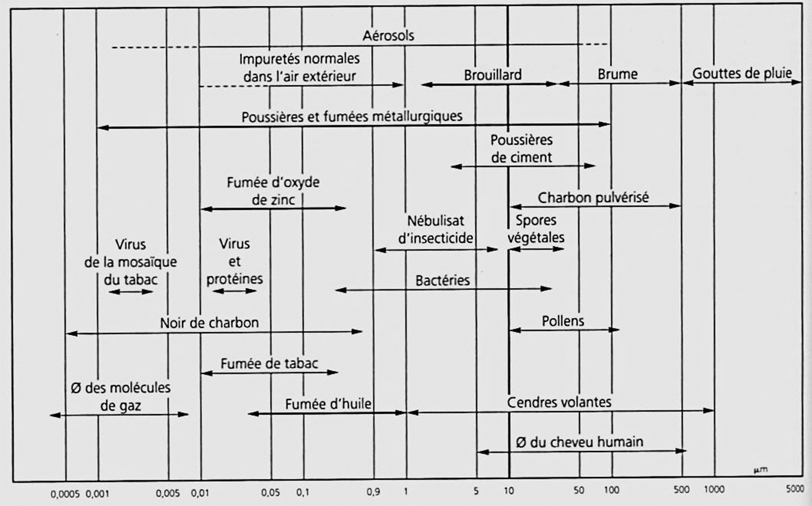
Toucher l'image pour l'agrandir| Type | Source | Exemples |
|---|---|---|
| Poussière | Désintégration mécanique d'un solide | Roche, charbon, bois |
| Fumée solide | Condensation de vapeurs ou produits de combustion | Fumées de soudage, DPM |
| Brouillard | Condensation de vapeurs de liquide | Brouillard d'acide |
| Nébulisat | Nébulisation mécanique d'un liquide | Peinture, huile de coupe, brouillard de forage |
| Fibres | Longueur >= 3x diamètre | Amiante, fibre de verre |
| Bioaérosols | Origine biologique | Bactéries, moisissures, voir Bioaérosols |
| Nanoparticules | 1 à 100 nm | Voir Nanoparticules |
Les particules industrielles présentent une grande diversité de formes.
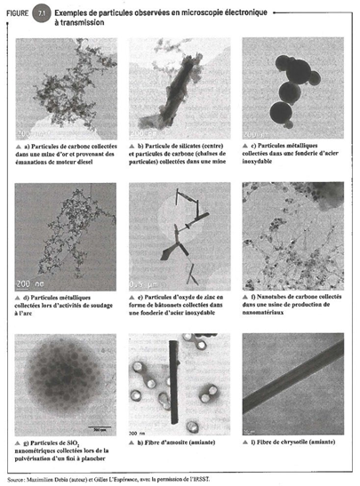
Toucher l'image pour l'agrandirPropriétés physiques
- Concentration massique : quantité par volume (mg/m³).
- Concentration numérique : nombre de particules par volume (utilisée pour les fibres, en fibres/cm³).
- Distribution de taille : caractérise la grosseur des particules.
Le diamètre aérodynamique est la propriété centrale pour prédire le comportement d'une particule.
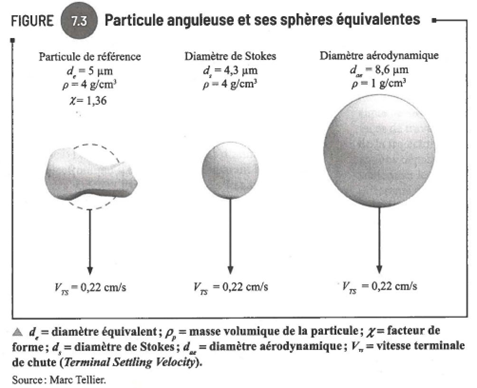
Toucher l'image pour l'agrandirLa vitesse de chute des particules dépend de leur taille et de leur densité.
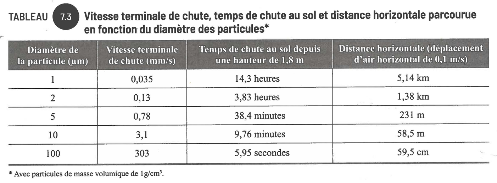
Toucher l'image pour l'agrandirEn milieu réel, la distribution de taille suit typiquement une loi log-normale.
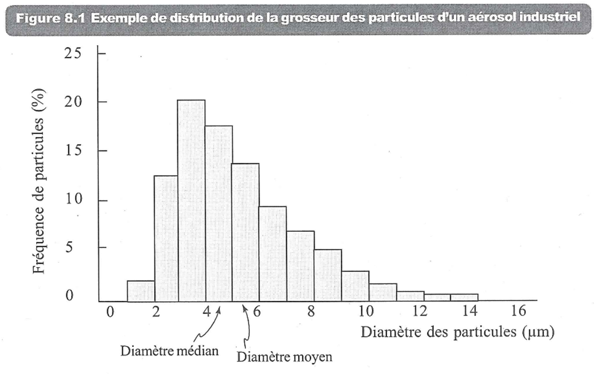
Toucher l'image pour l'agrandirFractions normalisées (ISO 7708, ACGIH)
- Inhalable (Pi) : particules entrant par le nez et la bouche (< ~100 µm).
- Thoracique (Pthor) : pénètrent au-delà du larynx (< ~25 µm).
- Respirable (Pr) : atteignent les alvéoles (< ~10 µm, médiane 4 µm).
Mécanismes de déposition
Cinq mécanismes interviennent dans la déposition pulmonaire.
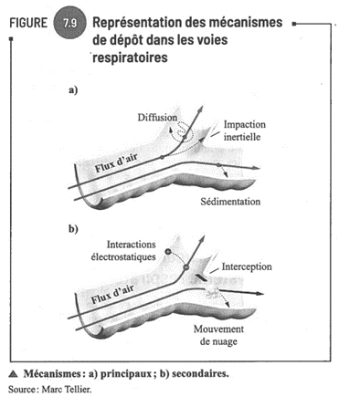
Toucher l'image pour l'agrandir- Sédimentation : chute par gravité (taille, masse, forme).
- Impaction : capture par inertie aux changements de direction (vitesse de l'air).
- Interception : la particule touche une surface en passant.
- Diffusion : très fines particules, < 1 µm.
- Interactions électrostatiques.
Le système respiratoire se divise en trois zones et chaque fraction atteint une zone caractéristique.
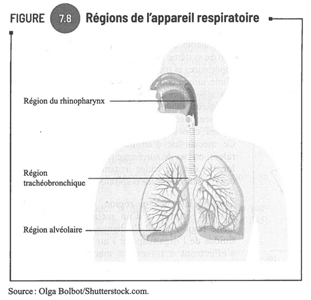
Toucher l'image pour l'agrandir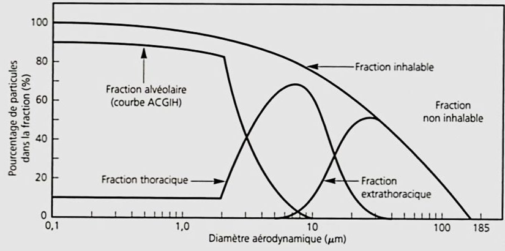
Toucher l'image pour l'agrandirLes notations RSST associées à ces fractions sont rappelées ci-dessous.
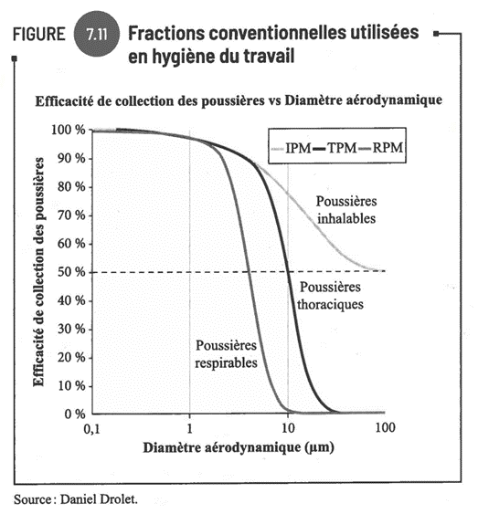
Toucher l'image pour l'agrandirEffets sur la santé
- Irritation des voies respiratoires, voir Toxicité du système respiratoire.
- Pneumoconioses (silicose, asbestose, sidérose). Voir Maladies professionnelles en mine.
- Allergies (poussières organiques, Métaux toxiques en milieu de travail). Voir Sensibilisants respiratoires et cutanés.
- Cancers (amiante, silice cristalline, chrome VI, nickel). Voir Cancérogénicité.
- Effets systémiques après absorption (plomb, manganèse, cadmium). Voir Métaux toxiques en milieu de travail.
Évaluation et échantillonnage
Pompe et filtre
- Pompe spéciale, calibrée, à débit constant.
- Filtre adapté (MCE, PVC, fibres de verre) selon l'analyse subséquente.
- Volume d'air = débit (L/min) x durée (min).
- Concentration = masse / volume.
Le RSST mentionne certaines méthodes basées sur la technique de prélèvement, avec leurs limites.
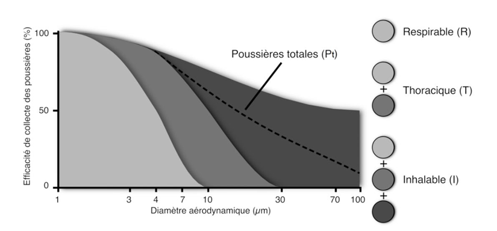
Toucher l'image pour l'agrandirSélection de fraction
- Cyclone pour la fraction respirable.
- Cassette IOM pour la fraction inhalable.
- Impacteur en cascade pour la distribution de taille.
Dispositif d'échantillonnage de la fraction thoracique selon l'ACGIH.
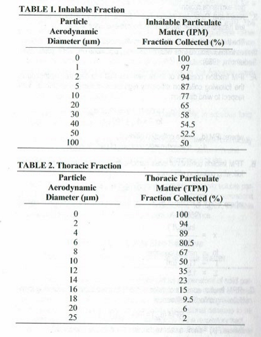
Toucher l'image pour l'agrandirInstruments à lecture directe
- Comptage de particules optique.
- Utile pour évaluation exploratoire, ne remplace pas les méthodes IRSST.
- Demande un étalonnage spécifique au milieu.
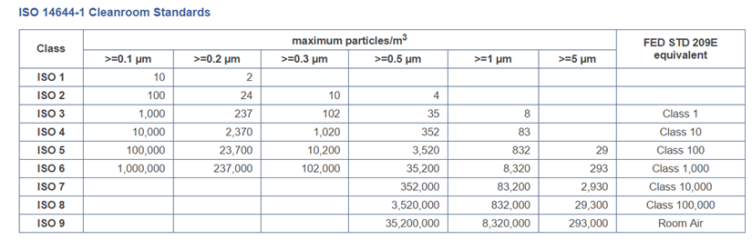
Toucher l'image pour l'agrandirÉchantillons de surface
- Frottis (wipe samples).
- Pas de correspondance directe avec l'exposition aéroportée.
- Critères existants pour plomb, béryllium et certains autres métaux.
Moyens de contrôle
Suivre la Hiérarchie des moyens de prévention
- Substitution (procédés humides, billes de verre vs sable).
- Ventilation locale à la source.
- Encoffrement, automatisation.
- Bonnes pratiques (humidification, nettoyage HEPA, proscription de l'air comprimé pour le nettoyage).
- Protection respiratoire (APR) adapté à la fraction (P100, N95, etc.).
Application terrain
Aérosols dominants en mine
| Aérosol | Origine | Particularités |
|---|---|---|
| Programme de prévention silice cristalline respirable | Forage, sautage, concassage, Manutention (hub) | C1, EM ; VEMP 0,1 mg/m³ |
| DPM (carbone élémentaire) | Engins diesel | Très fines particules, biomarqueur = EC |
| Poussières métalliques (Pb, Cd, Ni, As) | Fonderies, traitement de minerai | Surveillance biologique des métaux en mine pertinente |
| Brouillards d'huile et de forage | Foreuses, ateliers | Notation Pc possible |
| Fumées de soudage | Ateliers mécaniques | Cr VI, Mn selon procédé |
| Amiante | Bâtiments anciens, certaines roches | Voir Amiante |
Contrôles privilégiés en mine
- Forage humide (eau injectée à la couronne).
- Captation sur perforatrice (système intégré, fabricant).
- Confinement et arrosage des piles de minerai.
- Cabines pressurisées et filtrées sur engins (HEPA + charbon actif).
- Ventilation auxiliaire en cul-de-sac.
Ressources
| Document | Type | Source |
|---|---|---|
| Guide T-06 | Guide technique | IRSST |
| Manuel des méthodes analytiques | Référence | NIOSH (NMAM) |
| Fiches silice cristalline | Fiches | IRSST, NIOSH, MSHA |
| ISO 7708 | Norme | ISO |
Articles wiki connexes
- Maladies professionnelles en mine
- Bioaérosols
- Amiante
- Protection respiratoire (APR)
- Hiérarchie des moyens de prévention
← Accueil
�������������������������������������������������������������������������������������������������������������������������������������������������������������������������������������������������������������������������������������������������������������������������������������������������������������������
Pages qui pointent ici (26)
- 🎯 Démarrage rapide, conseiller SST Hygiène industrielle
- 🏠 Wiki Hygiène industrielle, mines Hygiène industrielle
- ADME, cheminement des contaminants dans l'organisme Toxicologie
- Agresseurs chimiques Hygiène industrielle
- Amiante Hygiène industrielle
- Amiante Toxicologie
- Aspiration et dangers biologiques Hygiène industrielle
- Aspiration et dangers biologiques Toxicologie
- Bioaérosols Hygiène industrielle
- Calculs d'exposition et ajustements TPN Hygiène industrielle
- Environnement de travail Hygiène industrielle
- Espaces clos Sécurité industrielle
- Gaz et vapeurs Hygiène industrielle
- Gestion des moteurs diesel sous terre Toxicologie
- Maladies professionnelles en mine Toxicologie
- Métaux toxiques en milieu de travail Hygiène industrielle
- Métaux toxiques en milieu de travail Toxicologie
- Nanoparticules Toxicologie
- Pesticides Toxicologie
- Programme de prévention silice cristalline Hygiène industrielle
- Programme de prévention silice cristalline Toxicologie
- Protection respiratoire (APR) Hygiène industrielle
- SIMDUT et classes de danger Hygiène industrielle
- SIMDUT et classes de danger Toxicologie
- Toxicité du système respiratoire Toxicologie
- VEA et normes RSST Hygiène industrielle